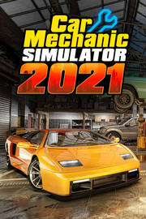

Car Mechanic Simulator 2021
Detalles
|  | |
| Tiempo de juego | No Jugado |
| Última actividad | Nunca |
| Añadido | 11/6/2024 15:35:16 |
| Modificado | 11/8/2024 17:40:56 |
| Estado de finalización | No Jugado |
| Librería | Playnite |
| Fuente | 2TB GAS |
| Plataforma | PC (Windows) |
| Fecha de lanzamiento | 8/11/2021 |
| Puntuación de la Comunidad | 94 |
| Puntuación de la Crítica | |
| Puntuación de usuario | |
| Género | Carreras Simuladores |
| Desarrollador | Red Dot Games |
| Editor | PlayWay S.A. |
| Característica | Cloud Saves Compat. Parcial Con Mando Cromos De Estadísticas Incluye Editor De Niveles Logros De Préstamo Familiar Un Jugador Workshop |
| Enlaces | Punto de encuentro Discusiones Guías Noticias Página de la tienda PCGamingWiki Logros Workshop |
| Tag | 3D Ambientales Aventura Carreras Conducción Educación Estrategia Indie Minijuegos Modificables Mundo abierto Primera persona Puzles Realistas RV Sandbox Simulación Simulador de automóviles Simulador inmersivo Un jugador |
Descripción
Car Mechanic Simulator 2021 es una nueva producción con una base de jugadores bien establecida. Empieza como el nuevo propietario de un taller de coches y ábrete camino hasta la cumbre del sector. Ensúciate las manos en un juego de simulación altamente realista con gran atención a los detalles. Prepárate para trabajar con más de 4000 piezas únicas y más de 72 coches. Arremángate y sumérgete en un entorno de taller altamente realista.

Amplía tu gama de servicios invirtiendo en nuevos espacios de trabajo y equipos. Repara, fija, prueba, pinta, afina y reconstruye coches. Paga por una visita a una nueva Casa de Subastas y compra coches en diversas condiciones. Si te sientes afortunado, prueba a buscar en graneros. En algunos podrás encontrar verdaderas joyas ocultas – si es que eres capaz de encontrarlas.

El número infinito de encargos te mantendrá ocupado durante un tiempo. Si te apetece un reto mayor, ponte a prueba en las misiones especialmente diseñadas del modo historia. Cada misión ofrece un conjunto único de requisitos y desafíos que tienes que afrontar.

Cuando hayas terminado de mejorar tu taller, será el momento de proyectar un coche. Ahorra algo de dinero y compra tu propio coche para dejarlo impecable. De un coche oxidado a un vehículo en perfecto estado. ¡Es hora de ensuciarse las manos!""

Características del producto

Novedadespara Car Mechanic Simulator 2021
Amplía tu gama de servicios invirtiendo en nuevos espacios de trabajo y equipos. Repara, fija, prueba, pinta, afina y reconstruye coches. Paga por una visita a una nueva Casa de Subastas y compra coches en diversas condiciones. Si te sientes afortunado, prueba a buscar en graneros. En algunos podrás encontrar verdaderas joyas ocultas – si es que eres capaz de encontrarlas.
El número infinito de encargos te mantendrá ocupado durante un tiempo. Si te apetece un reto mayor, ponte a prueba en las misiones especialmente diseñadas del modo historia. Cada misión ofrece un conjunto único de requisitos y desafíos que tienes que afrontar.
Cuando hayas terminado de mejorar tu taller, será el momento de proyectar un coche. Ahorra algo de dinero y compra tu propio coche para dejarlo impecable. De un coche oxidado a un vehículo en perfecto estado. ¡Es hora de ensuciarse las manos!""
Características del producto
- 72 Coches para arreglar
- Más de 4000 piezas únicas
- Un número infinito de encargos generados aleatoriamente
- Subastas de coches
- Encuentros en graneros
- Búsqueda de chatarra
- Misiones de la historia muy elaboradas
- Sistema de habilidades y mejoras del garaje
- Afinado de coches
- Juego sin fin
- Circuito de carreras con contrarreloj
Novedadespara Car Mechanic Simulator 2021
- Líquidos para el coche
- Lavado de coches con nuevas máquinas para eliminar la suciedad
- Amplio garaje de planta abierta
- Nuevo tipo de daño para las partes de la carrocería - abolladura
- Piezas mecánicas del coche que se pueden pintar
- Nuevos sonidos de motor
- Minijuegos
- Herramienta de torno de freno
- Sistema de mejora de la calidad
- Cajas de fusibles
- Nuevo sistema de aparcamiento
- Subastas para recuperar coches
- Modo de examen de piezas revisado
- Personalización visual de las piezas de la carrocería
- Configurador de coches
- Tornillos oxidados